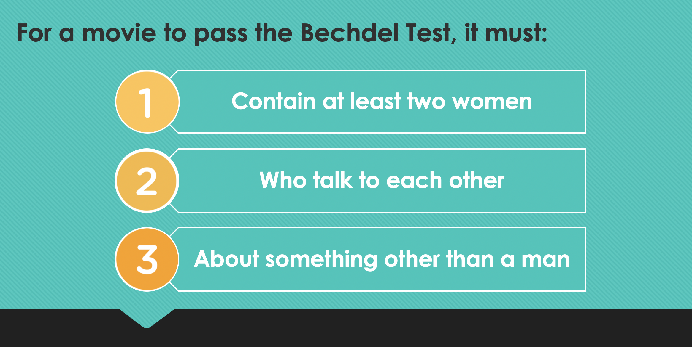

“Regardless of the content, a film has the power to shape perceptions of moviegoers on a range of subjects from love and marriage to the work of the government”
cf. Franklin 2006 ; Kolker 1999 ; Ortega-Liston 2000 ; Riggle, Ellis, and Crawford 1996
The Bechdel test is a blunt, basic measure of gender equality in fictional media.

From a data science perspective, we wondered if and how we could automate the process of scoring a film based on the Bechdel criteria. This project aims to complete a descriptive analysis to assess the potential of creating such a method.
Data Source
BechdelTest.com sources API to query their list of movies that have been scored on the test criteria [2]. Their data include a unique IMDb movie ID for each film, allowing us to link the Bechdel data to public movie data from IMDb that includes further information about the title, like genre and the average rating by IMDb users. We also utilize Polygraph's Film Dialogue Dataset which contains information from movie scripts about the number of words spoken by each character, as well as the available demographic information on that character. We suspect that some of the fields, like age, make be estimates, but consider the gender feature to be largely reliable.
Visualizations:
In the first dashboard, we examine the ratio of all movies that have been scored by the Bechdel test over time. Despite the upward trend, the maximum ratio is less than 40%, supporting the argument that there is a need to make the scoring process more efficient. If we are to consider the representation of women in media as reflective of perceptions of women by society, it is important that the distribution of Bechdel scores is representative of all movies.
The second dashboard compares the ratio of movies that pass the test to the proportion of words belonging to female characters, aggregated across movies over time. Without exploring the data, word-count would seem like a logical proxy to capture representation for use in an algorithmic approach. However, the results of this figure suggest otherwise. Over time, the ratio of movies passing the test has a larger slope than the ratio of female words to total words; this means that the content criterion of the Bechdel Test may play a larger role than just the word count. Using word count as a proxy for feature engineering purposes may not be the wisest decision.
Finally, the last dashboard shows the proportion of movies that pass the Bechdel test conditioned on the genre of the movie, over time. We are able to see clear trends in the proportion of passing movies when the feature is split on genre. Romance and Horror films have had the highest ratio of passing the Bechdel test since the 1980s; while Crime and Action films have had the lowest ratio of passing.
Conclusion
In this descriptive exploration of data, we have begun to see how nuanced an automation methodology would need to be to accurately capture the scoring of the Bechdel test. It would be difficult to find single proxy variables for the 3 criteria of the test, and feature engineering would need to include domain knowledge. This is not to say that automation is impossible; but our takeaway is that, as Data Scientists, we are the ones who need to voice concerns about using proxies that aren’t representative, and we should include the voices of domain experts when modeling qualitative outcomes that may be subjective.
Finding a way to automate the Bechdel test may be a difficult undertaking; however, it could help improve the measure of the true proportion of Bechdel passing films by scoring all movies in the IMDb and beyond. It is of note is that it is also not the only metric for quantifying representation in media, as it only considers one identity variable -- gender. Washington Post writer Alyssa Rosenberg claims "The Bechdel Test set a very low floor for Hollywood. We can't let it become the ceiling for progress [3]." In the past decade, many other representation tests have been formulated, considering the distribution of people who work on the film's production, or relating other intersectional features like race, ethnicity, socioeconomic status, so that representation is inclusive to identities beyond cisgender white women. Though our analysis focuses on the Bechdel Test, our suggestions about feature engineering can help establish similar methodologies for other tests and continue to build a more equitable movie industry.
Team
We are data science masters students from New York University's Center for Data Science, and completed this project for our Introduction to Programming Class.